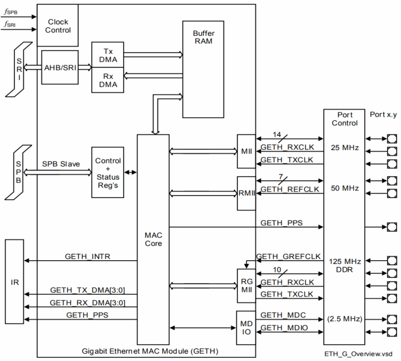
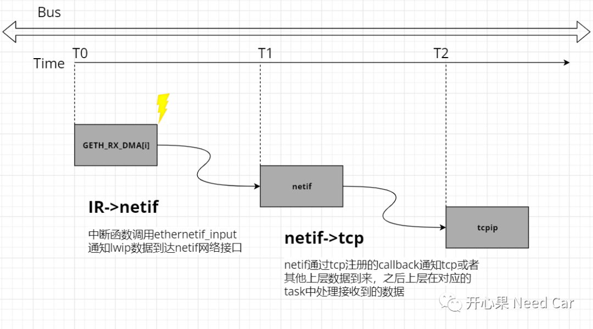
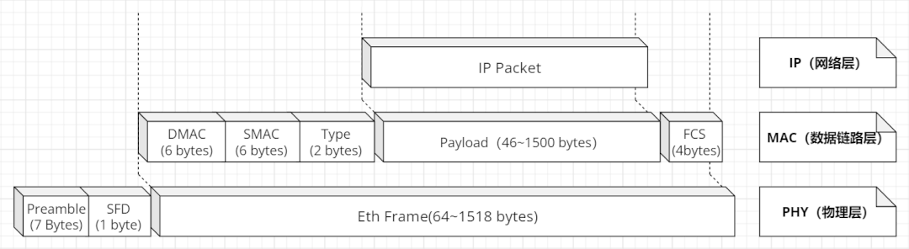
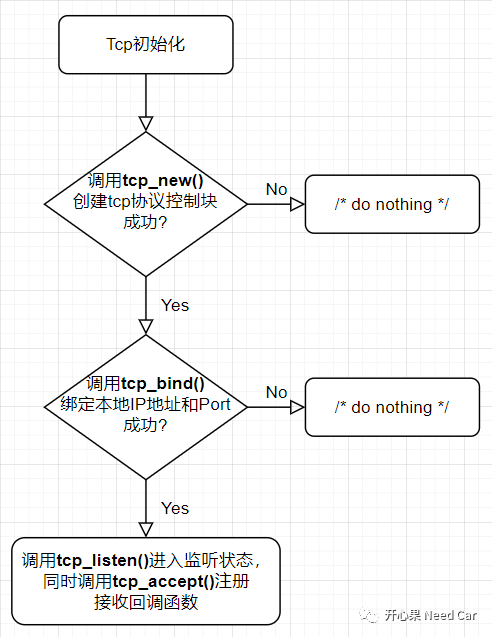

汽车级的芯片往往内存较小，不像PC那样以G度量，大都是M级别，因此以太网开发也不能像PC那样奢侈的使用资源。以太网的核心开发又脱离不了IP的使用，因此很多厂商移植LWIP(Light Weight TCP/IP)。
这种轻量级的TCP/IP在MCU上使用就“舒服”的多了（足够我们学习和理解以太网）。这里给出源码链接地址，感兴趣的朋友可以去下载：
官方链接：
http://savannah.nongnu.org/projects/lwip/
lwip各版本下载链接：
http://download.savannah.nongnu.org/releases/lwip/
我们本文讲解以太网数据的接收，环境：tc397。
对于tc397以太网数据包接收后的中断触发过程如下所示。以太网的接收和发送分别使用了4个端口，对应的接收也分别对应4路DMA。PHY将数据传给MAC以后，MAC会产生一个DMA接收中断送给IR仲裁。

- 当PHY从总线接收到以太网数据帧以后，在T0时刻产生DMA接收中断
- 在T1时刻，中断处理函数中会将数据copy给lwip
- 在T2时刻，lwip层将数据通过tcp注册的callback进一步向上传输（本例上层模块为tcp）
- tcp在对应的task中不断判断是否有数据到来，如果接收到数据则进行数据的处理

PHY芯片从以太网总线获取数据以后，将前导码（Preamble）和帧起始界定符（SFD：Start Frame Delimiter）拆除，传给数据链路层MAC，MAC对以太网帧进行CRC计算以及地址、类型过滤和识别，上述位域有效，经拆除后上传给网络层IP，之后再进一步上传给传输层和应用层。

这里多说两句，因为容易混淆Frame、Packet、Message、Segment。
Segment:针对传输层，比如：TCP。尤其大数据传输时，一个Packet放不下，需要多个Packet传输。对于物理层PHY来说没有帧的概念，PHY就是在数字信号和模拟信号之间不断地转换。
tcp在接收数据之前有一系列的动作需要完成，在嵌入式开发中，tcp的初始化动作如下所示：

注意：
tcp模块的初始化需要在lwip之后；
中断处理函数一般在Ifx_Lwip.c文件中定义；
因为初始化函数一般没有返回值，本例协议控制块等分配失败以后没有其他处理；
注册的回调函数一般会有接收回调、发送回调、错误回调等。
在OSI模型中，tcp属于传输层，在这一层绑定应用的端口（Port）即可将数据发送给指定的应用用户，通过Socket（IP+端口号)找到指定的用户。这里我们要谈一下端口号的分配问题，Port其实也不是我们想怎么分配就怎么分配的，根据IANA规定，端口号分为：系统端口号（0~1023）、用户端口号（1024~49151）以及动态/私有端口号（49152~65535）。在我们嵌入式开发中，用户的端口号我们会在动态/私有端口号中自定义，即0xC000~0xFFFF（端口号使用2 Byte表示，即uint16类型）中任意值。http://www.iana.org/assignments/service-names-port-numbers/service-names-port-numbers.xhtml